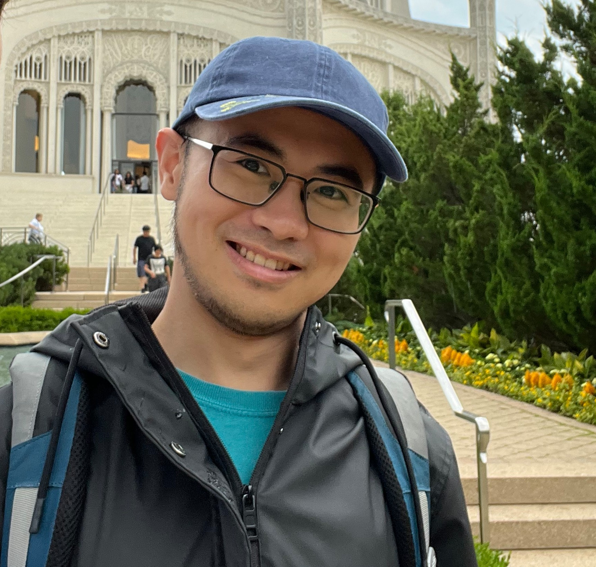

邮箱：yqnl at umich dot edu·
办公室：East Hall 4839
我在密歇根大学安娜堡分校数学系做博后，与 Alexander Perry 合作。
我以前在伊利诺伊大学芝加哥分校读博，导师是 Izzet Coskun。本科在南京大学。
我正在找工作。这是我的研究陈述。

我的研究兴趣主要是代数与代数几何，具体包括（但不限于）：射影簇与箭图的导出范畴、DG（与A无穷） 代数、Bridgeland稳定性、（DM）叠及其导出范畴、扭层与Brauer 群、稳定层及其模空间、Brill–Noether理论，以及经典低维代数几何。
最近我的研究围绕有限维DG代数。我也越来越关注正特征下的Frobenius态射及相关现象。